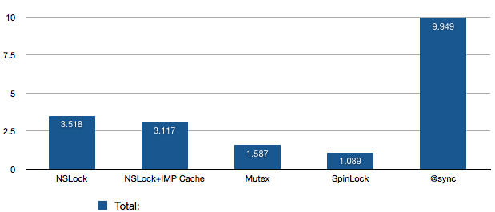

Somewhere out there on the internet, there’s a “showdown” between @synchronized, NSLock, pthread mutexes, and OSSpinLock. It aims to measure their performance relative to each other, but uses sloppy code to perform the measuring. As a result, while the performance ordering is correct (@synchronized is the slowest, OSSpinLock is the fastest), the relative cost is severely misrepresented. Herein I attempt to rectify that benchmark.
Locking is absolutely required for critical sections. These arise in multithreaded code, and sometimes their performance can have severe consequences in applications. The problem with the aforementioned benchmark is that it did a bunch of extraneous work while it was locking/unlocking. It was doing the same amount of extraneous work, so the relative order was correct (the fastest was still the fastest, the slowest still the slowest, etc), but it didn’t properly show just how much faster the fastest was.
In the benchmark, the author used autorelease pools, allocated objects, and then released them all. While locking. This is a pretty reasonable use-case, but by no means the only one. For most high-performance, multithreaded code, you’ll spend a bunch of time trying to make the critical sections as small and fast as possible. Large, slow critical sections effectively undo the multithreading speed up by causing threads to block each other out unnecessarily. So when you’ve trimmed the critical sections down to the minimum, another sometimes-justified optimization is to optimize the amount of time spent locking/unlocking itself.
Just to make things exciting though, not all locking primitives are created equal. Two of the 4 mentioned have special properties that can affect how long they take, and how the operate under pressure. I’ll get to that towards the end.
First up, here’s my “no-nonsense” microbench code:
#import <Foundation/Foundation.h>
#import <objc/runtime.h>
#import <objc/message.h>
#import <libkern/OSAtomic.h>
#import <pthread.h>
#define ITERATIONS (1024*1024*32)
static unsigned long long disp=0, land=0;
int main()
{
double then, now;
unsigned int i, count;
pthread_mutex_t mutex = PTHREAD_MUTEX_INITIALIZER;
OSSpinLock spinlock = OS_SPINLOCK_INIT;
NSAutoreleasePool *pool = [NSAutoreleasePool new];
NSLock *lock = [NSLock new];
then = CFAbsoluteTimeGetCurrent();
for(i=0;i<ITERATIONS;++i)
{
[lock lock];
[lock unlock];
}
now = CFAbsoluteTimeGetCurrent();
printf("NSLock: %f sec\n", now-then);
then = CFAbsoluteTimeGetCurrent();
IMP lockLock = [lock methodForSelector:@selector(lock)];
IMP unlockLock = [lock methodForSelector:@selector(unlock)];
for(i=0;i<ITERATIONS;++i)
{
lockLock(lock,@selector(lock));
unlockLock(lock,@selector(unlock));
}
now = CFAbsoluteTimeGetCurrent();
printf("NSLock+IMP Cache: %f sec\n", now-then);
then = CFAbsoluteTimeGetCurrent();
for(i=0;i<ITERATIONS;++i)
{
pthread_mutex_lock(&mutex);
pthread_mutex_unlock(&mutex);
}
now = CFAbsoluteTimeGetCurrent();
printf("pthread_mutex: %f sec\n", now-then);
then = CFAbsoluteTimeGetCurrent();
for(i=0;i<ITERATIONS;++i)
{
OSSpinLockLock(&spinlock);
OSSpinLockUnlock(&spinlock);
}
now = CFAbsoluteTimeGetCurrent();
printf("OSSpinlock: %f sec\n", now-then);
id obj = [NSObject new];
then = CFAbsoluteTimeGetCurrent();
for(i=0;i<ITERATIONS;++i)
{
@synchronized(obj)
{
}
}
now = CFAbsoluteTimeGetCurrent();
printf("@synchronized: %f sec\n", now-then);
[pool release];
return 0;
}
We do 5 tests: We test NSLock, NSLock with IMP caching, pthread mutexes, OSSpinLocks, and then finally @synchronized. We simply lock and unlock 33554432 times (that’s 1024102432 for those keeping score at home ;), and see how long it takes. No allocation, no releases, no autorelease pools, nothing. Just pure lock/unlock goodness. I ran the test a few times, and averaged the results (so overall, the results are from something like 100 million lock/unlock cycles each)
1.NSLock: 3.5175 sec
2.NSLock+IMP Cache: 3.1165 sec
3.Mutex: 1.5870 sec
4.SpinLock: 1.0893
5.@synchronized: 9.9488 sec

From the above graph, we can see a couple thing: First, @synchronized is Really expensive — like, 3 times as expensive as anything else. We’ll get into why that is in a moment. Otherwise, we see that NSLock and NSLock+IMP Cache are pretty close — these are built on top of pthread mutexes, but we have to pay for the extra ObjC overhead. Then there’s Mutex (pthread mutexes) and SpinLock — these are pretty close, but even then SpinLock is almost 30% faster than Mutex. We’ll get into that one too. So from top to bottom we have almost an order of magnitude difference between the worst and best.
The nice part about these all is that they all take about the same amount of code — using NSLock takes as many lines as a pthread mutex, and the same number for a spinlock. @synchronized saves a line or two, but with a cost like that it quickly looks unappealing in all but the most trivial of cases.
So, what makes @sychronized and SpinLock so different from the others?
@synchronized is very heavy weight because it has to set up an exception handler, and it actually ends up taking a few internal locks on its way there. So instead of a simple cheap lock, you’re paying for a couple locks/unlocks just to acquire your measly lock. Those take time.
OSSpinLock, on the other hand, doesn’t even enter the kernel — it just keeps reloading the lock, hoping that it’s unlocked. This is terribly inefficient if locks are held for more than a few nanoseconds, but it saves a costly system call and a couple context switches. Pthread mutexes actually use an OSSpinLock first, to keep things running smoothly where there’s no contention. When there is, it resorts to heavier, kernel-level locking/tasking stuff.
So, if you’ve got hotly-contested locks, OSSpinLock probably isn’t for you (unless your critical sections are Really Fast). Pthread mutexes are a tiny bit more expensive, but they avoid the power-wasting effects of OSSpinLock.
NSLock is a pretty wrapper on pthread mutexes. They don’t provide much else, so there’s not much point in using them over pthread mutexes.
Of course, standard optimization disclaimers apply: don’t do it until you’re sure you’ve chosen the correct algorithms, have profiled to find hotspots, and have found locking to be one of those hot items. Otherwise, you’re wasting your time on something that’s likely to provide minimal benefits.
拓展链接：